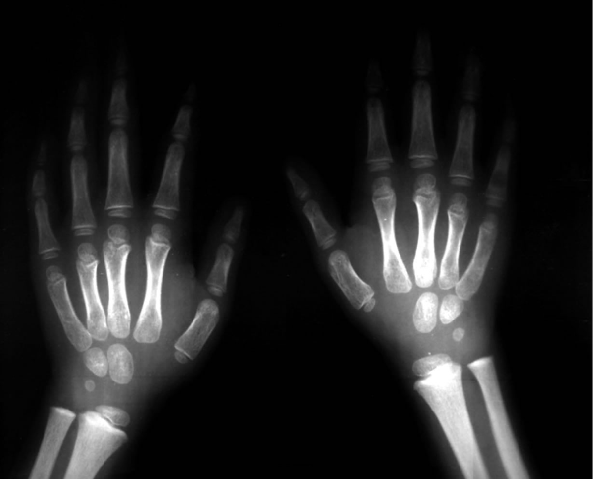
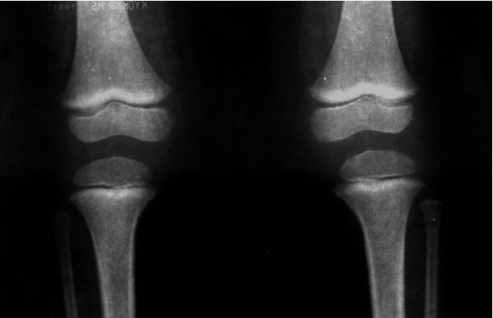

| METALS IN MEDICINE AND THE ENVIRONMENT | |||
| Metals | Trick or Treat? The Hidden Dangers in Candy | ||
Candy: A Sweet Treat or Dangerous Trick Every Halloween parents are warned of the possible dangers of the candy being passed out. From razor blades in the candied apples to ensuring all candy is properly sealed, parents have their hands full checking the candy. However, parents also have to worry about the contents of candy straight from the manufacturers. Unfortunately, children are receiving chocolate candy with varying levels of lead. But is this a problem since the FDA approves of 0.1 ppm maximum allowable lead levels. The limit was also just lowered in 2006 from 0.5 ppm, and is only limited to candies that are marketed towards children, which excludes dark chocolate and food products containing chocolate but not considered to have a child-based market. In addition, a distinct difference in manufacturing techniques, ingredients, and lead content exist between chocolates made in different countries.(1) Mexican chocolate, in particular, can prove to be extremely hazardous because of the extra ingredients added. This contributor overviews the differences in chocolates, the contamination routes, potential dangers lead consumption, and actions to take (focusing on danger of lead consumption). It’s All an Illusion The differences in domestic chocolate and Mexican chocolate are not so distinct that you can easily screen them from your children. However, key ingredients (not found in domestic chocolate) are used in Mexican chocolate, namely chili and tamarind. The tradition of chili powder use in the chocolate recipe dates back to 595 A.D, and is considered essential to the culinary culture.(2) So why are chili and tamarind a problem? In addition to the potential contamination from the lead ink in the wrapper, the cocoa bean, and the manufacturing method, Mexican chocolate contains chilies that often are contaminated with lead. The peppers are grown in lead rich soil, and then dried for the use in chocolate. The drying of the peppers actually causes the lead to become more concentrated. A study by the Orange County Register (CA) was conducted on chili to determine the amount of lead content.(3) It was discovered that from soil samples, chili powder samples, to finished product samples that lead is a common factor. From a Morelia market sample (from a seller that sells to chocolate companies), lead was found to be 1.5 ppm in a chili powder commonly used in Mexican chocolate production (tamarind was also found to have 1.5 ppm from the same market). Throughout the process of testing the water, soil, chili powder, and final product lead contents were found as high at 5 ppm. In addition to traditional chocolate, powdered snack mix products are generally made in Mexico and contain chili.(1) Since dark chocolate is a great risk to young children and the elderly that consume it, but is not restricted in lead content like milk chocolate a case study is being conducted to determine the threats. It is known that dark chocolate contains double the lead content of milk chocolate, and thus is more of threat because it is not regulated.(4) Furthermore, some lead comes from chocolate liquor used to make chocolate (dark chocolate containing more than milk chocolate).(1) Where Does it Come From? In 2005, the chocolate industry ran a test of 137 samples from seven different milk chocolate products and 226 samples from nine dark chocolate products. From these tests they found that the milk chocolate contained up to 0.222 ppm and the dark chocolate as high as 0.275 ppm. So where is all the lead coming from? In March of 2006, Dagoba recalled several of their chocolate lines because of contamination from new solder in one of the grinding machines.(5) It is well documented that lead can come from production and procession, packaging, and storage.(6) Production and processing have been discussed, and consist of absorption from the soil and grinding or cutting contamination. In addition packaging accounts for some lead content since bright yellow and red dyes on candy wrappers may contain lead.(7) It is also important to note that the primary exposure to lead is through ingestion. Everyone is at risk for lead poisoning, but children and the elderly are affected more at lower levels than others. However, lead is an accumulative hazard and thus possesses a greater problem because of the multiple pathways into the body. A person has to no only ensure that their pipes and paint are lead-free, but everything you come in contact with. Also it is known that Americans eat on average twelve pounds of chocolate per year, with intense marketing toward children.(8) Children under the age of six are at higher risk than others because their brains and central nervous system are still developing.(9) Even low levels will: reduce IQ, cause learning disorders, stunted growth, impair hearing, and cause kidney damage.(9) It was also discovered that children with higher levels of lead were prone to injuries and falls.(5) Roughly 430,000 American children between the ages of 1 and 5 years old have level above 10 ugm/dg of blood-lead.(10) These children, due to the side effects, are a market of $43.4 billon dollars.(11) Lead is also ingested more frequently in larger qualities in children than adults, and children absorb more lead than do adults.(6) Lead exposure in childhood has also been linked to higher absenteeism in high school, lower class rank, poorer verbal skills, longer reaction time, and poor hand-eye coordination.6 Also, the uptake of lead is increased when certain other metals are present. It was found that there was a higher absorption of lead when calcium was ingested at the same time.(12) Also be warned that some vitamin supplements contain more than the bottle states, and thus the lead content (which should be zero) and the calcium content might be higher than suspected.(13) Thus, although it is thought that you are helping your child to grow with a one-a-day chewable you might be stunting their growth. Overall Physiological Effects(6)
Symptoms(6)
A informative table can be found at http://www.atsdr.cdc.gov/csem/lead/pbcover_page2.html. In addition to looking for signs, longbone radiographs are used to determine exposure. Below are two images of a five and three year old respectively with “lead lines”.(6)   What to Do? You should ensure that your environment has little to no lead; children are more susceptible to inhaling or eating lead from a house environment. Although it is unnecessary to exclude chocolate from the diet, it should be sparse and considered a treat.5 (5) Be aware of the unknown lead and higher calcium content in the vitamins you give your children. Also be aware of the symptoms and get the child check out immediately if you suspect any exposure. Be aware that you are at risk as well, and ensure you lead intake is not high. So this Halloween while checking your child’s candy, be sure to think about the amount of lead inherent in all those candies, and limit them to the pieces of candy that you will let them eat. Resources The History of Mexican Chocolate Orange County Register "Toxic Treats" Agency for Toxic Substances & Disease Registry Limiting Lead Intake from Chocolate References (1) ElAmin, A. Regulator lowers limits of lead levels in children’s candy. Decision News Media SAS. (2006). (2) DeWitt, D. Chiles and Chocolate. FieryFoods.com. <http://www.fiery-foods.com/dave/chilechoc.asp> (3) Godines, V. Tests suggest lead introduced in powder. Freedom Communications, Inc. (2005). (4) Raloff, J. Leaden Chocolates. Science News. 168, No. 19 (2005). (5) McRandle, P.W. Lighten Hearts. Green Guide. 118 (2007). (6) Agency for Toxic Substances and Disease. Lead Toxicity. Case Studies in Environmental Medicine. 9-55 (2007). (7) Mushak P, Davis JM, Crocetti AF, Grant LD. Prenatal and postnatal effects of low-level lead exposure: integrated summary of a report to the US Congress on childhood lead poisoning. Environmental Research 50:11-36 (1989). (8) American Environmental Safety Institute. Lead in Chocolate: The impact on children’s health. American Environmental Safety Institute Fact Sheet. (2002). (9) National Safety Council. Lead Poisoning. National Safety Council. (2004). (10) EPA. 2004b. Measure B1: Lead in the blood of children. Washington, DC. <www.epa.gov/economics/children/body_burdens/b1.htm> (11) Landrigan PJ, Schechter CB, Lipton JM, et al. Environmental pollutants and disease in American children: Estimates of morbidity, mortality, and costs for lead poisoning, asthma, cancer, and developmental disabilities. Environmental Health Perspective 110 (7):721–728 (2002). (12) Yanez, L., Batres, L., Carrizales, L., Santoyo, M., Escalante, V., and Diaz-Barriaga, F. Toxicological assessment of azarcon, a lead salt used as a folk remedy in Mexico. I. Oral toxicity in rats. Journal of Ethnopharmacology. 41 91-97 (1994). (13) Garcia-Rico, L., Leyva-Perez, J., and Jara-Marini, M.E. Content and daily intake of copper, zinc, lead, cadmium, and mercury from dietary supplements in Mexico. Food and Chemical Toxiciology. 45 1599-1605 (2007). Author: Jessica Sheehan |
|||
| Topics | |||
|
|||